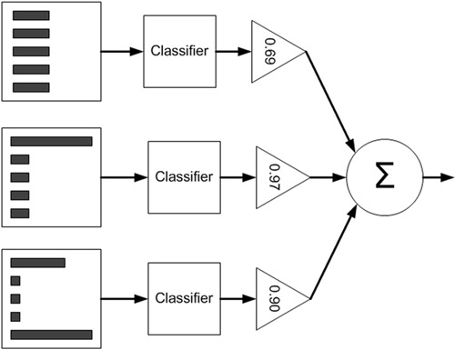
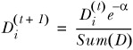
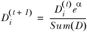

利用AdaBoost元算法提高分类性能
在做决定时，大家可能会吸取多个专家而不是一个人的意见，机器学习也有类似的算法，这就是元算法（meta-algorithm）。
元算法是对其他算法进行组合的一种方式。
基于数据集多重抽样的分类器
前面已经学习了五种不同的分类算法，它们各有优缺点，我们可以将不同的分类器组合起来，这种组合结果则呗称为集成方法（ensemble method）或者元算法（meta-algorithm）。
集成方法有多种形式：不同算法的集成，同一种算法不同设置的集成，数据集不同部分分配给不同分类器之后的集成，同一种分类器多个不同实例的两种计算方法。
AdaBoost
优点：泛化错误率低，易编码，可以应用在大部分分类器上，无参数调整
缺点：对离群点敏感
适用数据类型：数值型和标称型数据
bagging：基于数据随机抽样的分类器构建方法
自举汇聚法（bootstrap aggregating），也称为bagging方法，从原始集合随机选择一个样本，然后随机选择的样本来代替这个样本，意为有放回的取样得到的。
在有放回抽样得到S个数据集后，将某个学习算法分别作用在每个数据集上，就得到了S个分类器，对新数据进行分类时，用这个S个分类器进行投票表决的方法决定分类结果。
其他bagging的方法：随机森林（random forest）
boosting
boosting是一种类似bagging的方法。bagging的分类器时通过串行训练而获得的，每个新分类器都根据已训练处的分类器的性能来进行训练。boosting是通过集中关注被已有分类器错分的那些数据来获得新的分类器。
由于boosting分类结果是基于所有分类器的加权求和结果的，因此boosting与bagging不一样。
bagging中的分类权重是相等的，boosting中的分类器权重并不相等，每个权重代表的是其对应分类器在上一轮迭代中的成功度。
AdaBoost的一般流程
- 收集数据
- 准备数据：依赖于所有使用的弱分类器类型，本章使用的是单层决策树，这种分类器可以处理任何数据类型。作为弱分类器，简单的分类器效果更好。
- 分析数据
- 训练算法：AdaBoost的大部分时间都在训练上，分类器将多次在同一数据集上训练弱分类器
- 测试算法：计算分类的错误率
- 使用算法：同SVM一样，AdaBoost预测两个类别中的一个，如果要应用在多分类问题，要进行修改。
训练算法：基于错误提升分类器的性能
AdaBoost是adaptive boosting（自适应boosting）的缩写，其运行过程如下：训练数据中的每个样本，并赋予其中一个权重，这些权重构成向量D。
一开始，这些权重都初始化成相等值，首先在训练数据上训练出一个弱分类器并计算该分类器的错误率，然后在同一数据集上再次训练弱分类器。
在分类器的第二次训练中，将重新调整每个样本的权重，其中第一次分对的样本权重将会降低，而第一次分错的样本权重将会提高。为了从所有弱分类器中得到最终的分类结果
AdaBoost为每个分类器都分配一个权重值alpha，这些alpha值是基于每个弱分类器的错误率进行计算的。
其中错误率ε的定义为：
$$\epsilon=\frac{未正确分类的样本数目}{所有样本数目}$$
alpha的计算公式如下：
$$\alpha=\frac{1}{2}ln(\frac{1-\epsilon}{\epsilon})$$
计算流程图如下：

左边是数据集，其中直方图的不同宽度表示样本的权重。在经过一个分类器后，加权的预测结果会通过三角形的alpha进行加权。每个三角形中输出的加权结果在圆形中求和，得到输出结果。
计算出alpha值后，可以对权重向量D进行更新。
如果样本被正确分类，权重降低

如果样本被错分，权重增加

在计算出D之后，AdaBoost又开始进行下一轮迭代。AdaBoost算法会不断的重复训练和调整权重，直到训练错误率为0或者达到指定次数。
基于单层决策树构建弱分类器
单层决策树（decision stump，也称决策树桩）是一种简单的决策树。先构建一个简单的数据集。
1 | from numpy import * |
1 | import matplotlib |
1 | plotSupportVectors() |

如果想要选择一个与坐标轴平行的线来把圆点和方形分开是不可能的，这就是单层决策树难以处理的一个著名问题。通过使用多棵单层决策树我们就可以构建出一个能够正确处理该数据集的分类器。
1 | datMat, classLabels = loadSimpData() |
接下来构建单层决策树
第一个函数用来测试是否有某个值小于或者大于我们正在测试的阈值。
第二个函数是在一个加权数据集中循环，并找到具有低错误率的单层决策树
伪代码：
将最小错误率minError设备+∞
对数据集中的每一个特征（第一层循环）：
对每个步长（第二层循环）：
对每个不等号（第三层循环）：
建立一棵单层决策树并利用加权数据集对它测试
如果错误率低于minError，则将当前单层决策树设为最佳单层决策树
返回最佳单层决策树
1 | def stumpClassify(dataMatrix, dimen, threshVal, threshIneq): |
1 | D = mat(ones((5, 1))/5) |
({'dim': 0, 'thresh': 1.3, 'ineq': 'lt'},
matrix([[0.2]]),
array([[-1.],
[ 1.],
[-1.],
[-1.],
[ 1.]]))
第一个函数stumpClassify()是通过阈值比较对数据进行分类的。所有在阈值一边的数据会分到类别-1，而在另一边的数据分到类别+1。
第二个函数buildStump()将会遍历stumpClassify()函数所有的可能性，并找到数据集上最佳的单层决策树。这里的最佳是基于数据权重向量D来定义的。
bestStump的字典用于储存给定权重向量D时所得到的最佳单层决策树的相关信息。
变量numSteps用于在特征的所有可能值上进行遍历。而变量minError则在开始初始化为无穷大，之后寻找可能的最小错误率。
这个单层决策树的核心思想就是找到一个数，通过比较这个数，找到拟合正确率最大的。
结果dim=0，代表用第一列比较，thresh=1.3，ineq=lt，代表小于等于1.3的结果
第一列：
1 | datMat[:,0] |
matrix([[1. ],
[2. ],
[1.3],
[1. ],
[2. ]])
这一列大于1.3的为1，小于等于1.3的为-1
1 | datMat[:,0] <= 1.3 |
matrix([[ True],
[False],
[ True],
[ True],
[False]])
所以预测结果为：[-1,1-1,-1,1] 正确率为4/5，所以错误率为0.2。
这就是一个单层决策树，只考虑一列数的影响，而非全局。
完整AdaBoost
我们利用上面的单层决策树来实现完整的Adaboost，伪代码如下：
对每次迭代：
利用buildStump()函数找到最佳的单层决策树
将最佳单层决策树加入到单层决策树数组
计算alpha
计算新的权重向量D
更新累计类别估计值
如果错误率等于0.0则退出循环
1 | def adaBoostTrainDS(dataArr, classLabels, numIt=40): |
1 | adaBoostTrainDS(datMat, classLabels, 9) |
D: [[0.2 0.2 0.2 0.2 0.2]]
classEst: [[-1. 1. -1. -1. 1.]]
aggClassEst: [[-0.69314718 0.69314718 -0.69314718 -0.69314718 0.69314718]]
predictedVals: [[-1. 1. -1. -1. 1.]]
total error: 0.2
D: [[0.5 0.125 0.125 0.125 0.125]]
classEst: [[ 1. 1. -1. -1. -1.]]
aggClassEst: [[ 0.27980789 1.66610226 -1.66610226 -1.66610226 -0.27980789]]
predictedVals: [[ 1. 1. -1. -1. -1.]]
total error: 0.2
D: [[0.28571429 0.07142857 0.07142857 0.07142857 0.5 ]]
classEst: [[1. 1. 1. 1. 1.]]
aggClassEst: [[ 1.17568763 2.56198199 -0.77022252 -0.77022252 0.61607184]]
predictedVals: [[ 1. 1. -1. -1. 1.]]
total error: 0.0
[{'dim': 0, 'thresh': 1.3, 'ineq': 'lt', 'alpha': 0.6931471805599453},
{'dim': 1, 'thresh': 1.0, 'ineq': 'lt', 'alpha': 0.9729550745276565},
{'dim': 0, 'thresh': 0.9, 'ineq': 'lt', 'alpha': 0.8958797346140273}]
结果包含三个字典，其中包含了分类所需要的所有信息。
测试算法：基于AdaBoost的分类
1 | def adaClassify(datToClass, classifierArr): |
1 | classifierArr = adaBoostTrainDS(datMat, classLabels, 30) |
D: [[0.2 0.2 0.2 0.2 0.2]]
classEst: [[-1. 1. -1. -1. 1.]]
aggClassEst: [[-0.69314718 0.69314718 -0.69314718 -0.69314718 0.69314718]]
predictedVals: [[-1. 1. -1. -1. 1.]]
total error: 0.2
D: [[0.5 0.125 0.125 0.125 0.125]]
classEst: [[ 1. 1. -1. -1. -1.]]
aggClassEst: [[ 0.27980789 1.66610226 -1.66610226 -1.66610226 -0.27980789]]
predictedVals: [[ 1. 1. -1. -1. -1.]]
total error: 0.2
D: [[0.28571429 0.07142857 0.07142857 0.07142857 0.5 ]]
classEst: [[1. 1. 1. 1. 1.]]
aggClassEst: [[ 1.17568763 2.56198199 -0.77022252 -0.77022252 0.61607184]]
predictedVals: [[ 1. 1. -1. -1. 1.]]
total error: 0.0
[[-0.69314718]]
[[-1.66610226]]
[[-2.56198199]]
matrix([[-1.]])
1 | adaClassify([[5, 5], [0, 0]], classifierArr) |
[[ 0.69314718 -0.69314718]]
[[ 1.66610226 -1.66610226]]
[[ 2.56198199 -2.56198199]]
matrix([[ 1.],
[-1.]])
实例：在一个复杂数据集上应用AdaBoost
- 收集数据
- 准备数据：确保类别标签是+1和-1而非0和1
- 分析数据
- 训练算法：在数据上，利用adaBoostTrainDS()函数训练出一系列分类器
- 测试算法：用AdaBoost和Logistic回归对比
- 使用算法：观察该例子上的错误率
1 | def loadDataSet(fileName): |
1 | dataArr, labelArr = loadDataSet('MLiA_SourceCode/machinelearninginaction/Ch07/horseColicTraining2.txt') |
1 | testArr, testlabelArr = loadDataSet('MLiA_SourceCode/machinelearninginaction/Ch07/horseColicTest2.txt') |
1 | errArr=mat(ones((67, 1))) |
16.0
分类错误为16个，错误率23%，明显优于逻辑回归的33%。
1 | classifierNum = [1, 10 , 50, 100, 500, 1000, 10000] |
分类器数目 训练错误率 测试错误率
1 0.28 0.27
10 0.23 0.24
50 0.19 0.21
100 0.19 0.22
500 0.16 0.25
1000 0.14 0.31
10000 0.11 0.33
观察上表发现，随着分类器的增加训练错误率在减小，测试错误率在达到一个最小值后又开始上升，这种现象称为过拟合（overfitting）。
AdaBoost和SVM有很多相似之处，我们可以把弱分类器想象成SVM的一个核函数，也可以按照最大化某个最小间隔的方式重写AdaBoost算法。而它们的不同之处在于其所定义的间隔计算方式有所不同，因此导致结果也不同。特别是在高纬度空间下，这两者之间的差异就更加明显。
非均衡问题分类
之前我们假设类别的分类代价是一样的，这样就会出现一系列问题，例如：我们预测马会死，人们就可能给马实施安乐死而不是通过治疗来避免死亡，我们的预测也许是错误的，马本来可以继续活着，毕竟我们的分类器只有80%的精确率。
如果过滤垃圾邮件，合法的邮件也被认为是垃圾邮件呢，癌症检测情愿误判也不能漏判。
在大多数情况下不同类别的分类代价并不相等。接下来讨论一种新的分类器度量方法。
其他分类性能度量指标：正确率、召回率、及ROC曲线
错误率指的是在所有测试样例中错分的样例比例，这样的度量错误掩盖了样例如何被分错的事实。
在机器学习中有一个普遍适用的称为混淆矩阵（confusion matrix）的工具，它可以帮助人们更好的了解分类中的错误，有这样一个关于在房子周围可能发现的动物类型的预测。
| . | 预 | 测 | 结 | 果 |
|---|---|---|---|---|
| 真 | 狗 | 猫 | 鼠 | |
| 实 | 狗 | 24 | 2 | 5 |
| 结 | 猫 | 2 | 27 | 0 |
| 果 | 鼠 | 4 | 2 | 30 |
利用混淆矩阵就可以更好地理解分类中的错误了。如果矩阵非对角元素均为0，就会得到一个完美的分类器。
接下来考虑另外一个混淆矩阵。
| . | 预测结果 | ||
|---|---|---|---|
| 真 | +1 | -1 | |
| 实 | +1 | 真正例（TP） | 伪反例（FN） |
| 结 | -1 | 伪证例（FP） | 真反例（TN） |
| 果 |
正确率（precision） = TP/(TP+FP)
召回率（Recall） = TP/(TP+FN)
我们可以构造一个高正确率或搞召回率的分类器，但是奋男保证两者都成立。
另一种度量分类中的非均衡性的工具是ROC曲线（ROC curve）,ROC代表接收者操作特征（receiver operating characteristic），他最早在二战期间由电器工程师构建雷达系统时使用过。
1 | def plotROC(predStrengths, classLabels): |
1 | dataArr, labelArr = loadDataSet('MLiA_SourceCode/machinelearninginaction/Ch07/horseColicTraining2.txt') |

the Area Under the Curve is: 0.8582969635063604
上图给出两条线，一条实线一条虚线，图中的横轴是伪证例的比例（FP/(FP+TN)），纵轴是真正例的比例（TP/(TP+FN)）。ROC曲线给出的是当阈值变化时假阳率和真阳率的变化情况。
ROC曲线不但可以用于比较分类器，还可以基于成本效益（cost versus benefit）分析来做出决策。由于在不同的阈值下，不同的分类器的表现情况可能各不相同，因此一某种方式将它们组合起来获取更有意义。
在理想情况下，最佳的分类器应该尽可能处于左上角，这意味着分类器在假阳率很低的同时获得了很高的真阳率。例如过滤了所有的垃圾邮件，没有将合法邮件误识别为垃圾邮件。
ROC曲线下下的面积（Are unser the curve，AUC）AUC给出的时分类器的平均性能值，一个完美的分类器AUC为1，随机猜测的AUC为0.5。
基于代价函数的分类器决策控制
处理非均衡问题的数据抽样方法
欠抽样（undersampling）删除样例
过抽样（oversampling）复制样例
总结
集成方法通过组合多个分类器的分类结果，获得了比简单的分类器更好的分类结果。
多个分类器组合可能会进一步凸显出单分类器的不足，比如过拟合问题。如果分类器之间差别显著，那么多个分类器组合就可能会缓解这一问题。
在bagging中，是通过随机抽样的替换方式得到与原始数据集规模一样的数据集，而boosting在数据集上顺序应用了多个不同的分类器。
非均衡分类问题是指在分类器训练时正例数目和反例数目不相等（相差很大）。该问题在错分正例和反例的代价不同时也存在